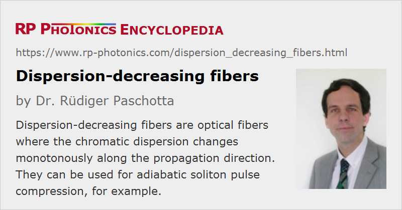

Dispersion-decreasing Fibers
Definition: optical fibers where the chromatic dispersion changes monotonously along the propagation direction
More general term: optical fibers
German: Fasern mit abnehmender Dispersion
Categories: fiber optics and waveguides, light pulses
How to cite the article; suggest additional literature
Author: Dr. Rüdiger Paschotta
Dispersion-decreasing fibers are optical fibers where the magnitude of the (typically anomalous) chromatic dispersion decreases along the propagation direction. Such a behavior can be obtained e.g. by gradually changing the fiber diameter during the fiber pulling process, because the fiber diameter affects the waveguide dispersion of the fiber. Such tapered fibers can be made of standard single-mode fibers, but also of photonic crystal fibers.
A possible application of dispersion-decreasing fibers is adiabatic soliton compression, where one exploits the fact that a soliton pulse adapts its parameters (including the pulse duration) to the fiber parameters, provided that the variation of dispersion is sufficiently slow.
Due to the difficulty of fabricating and handling dispersion-decreasing fibers, such fibers are not widely used.
Questions and Comments from Users
Here you can submit questions and comments. As far as they get accepted by the author, they will appear above this paragraph together with the author’s answer. The author will decide on acceptance based on certain criteria. Essentially, the issue must be of sufficiently broad interest.
Please do not enter personal data here; we would otherwise delete it soon. (See also our privacy declaration.) If you wish to receive personal feedback or consultancy from the author, please contact him e.g. via e-mail.
By submitting the information, you give your consent to the potential publication of your inputs on our website according to our rules. (If you later retract your consent, we will delete those inputs.) As your inputs are first reviewed by the author, they may be published with some delay.
See also: dispersion-shifted fibers, tapered fibers, adiabatic soliton compression
and other articles in the categories fiber optics and waveguides, light pulses
|  |
If you like this page, please share the link with your friends and colleagues, e.g. via social media:
These sharing buttons are implemented in a privacy-friendly way!